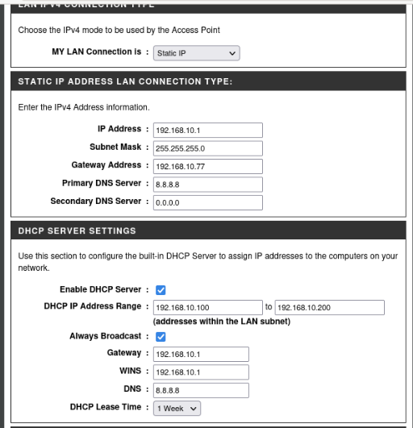
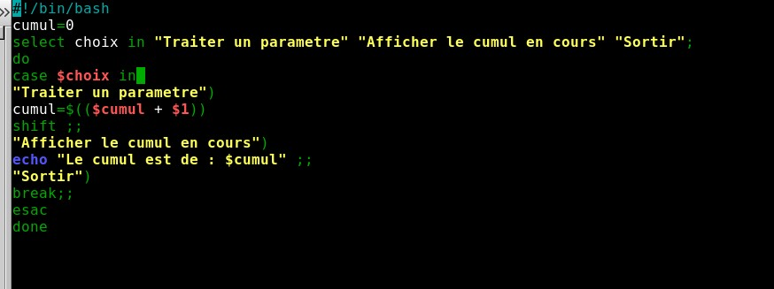
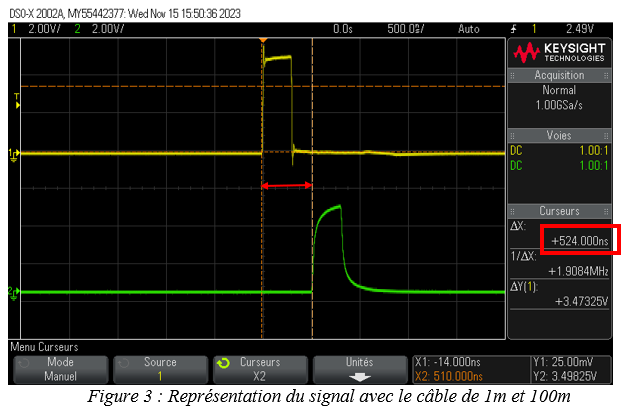
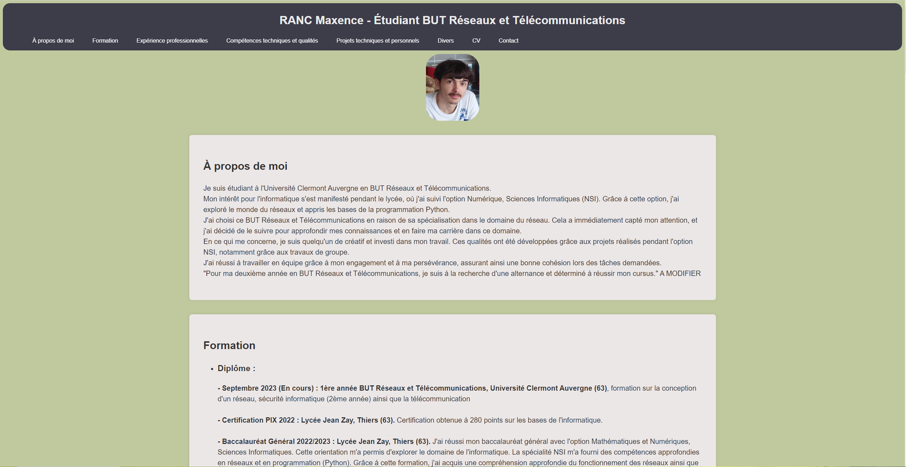
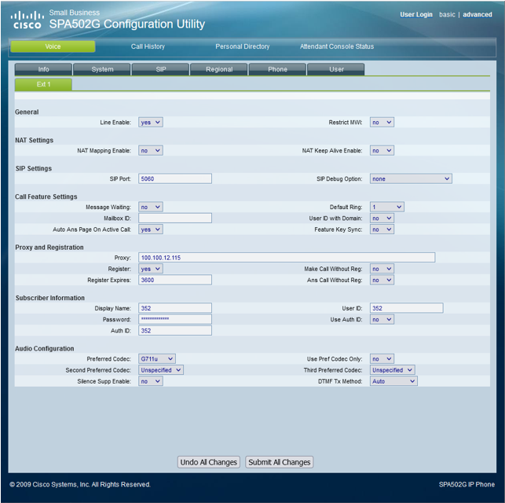

À propos de moi
Je suis actuellement étudiant en BTS Services Informatiques aux Organisations, option SISR, formation orientée vers l’administration des systèmes et des réseaux. Mon intérêt pour l’informatique s’est développé dès le lycée, lorsque j’ai suivi l’option Numérique et Sciences Informatiques (NSI). Cette première approche m’a permis de découvrir les bases de la programmation en Python ainsi que le fonctionnement des réseaux, domaines qui ont rapidement suscité ma curiosité. J’ai choisi de poursuivre dans la voie de l’infrastructure et des systèmes, car j’apprécie particulièrement la rigueur, la logique et l’organisation qu’exige ce domaine. Au fil de mes apprentissages, j’ai pu renforcer ma maîtrise des environnements systèmes, des services réseaux et des principes fondamentaux de la cybersécurité. Créatif, appliqué et déterminé, je m’investis pleinement dans chaque projet qui m’est confié. Les travaux réalisés durant mon parcours, notamment en groupe, m’ont permis de développer un bon esprit d’équipe ainsi qu’une capacité à collaborer efficacement pour atteindre les objectifs fixés. Dans le cadre de ma formation, je suis actuellement à la recherche d’un stage du 18 mai 2026 au 19 juin 2026. Je vous invite à parcourir ce portfolio afin de découvrir plus en détail mon parcours, mes projets ainsi que les compétences techniques que j’ai acquises grâce à ma passion pour l’informatique et les systèmes.
Formation
-
Diplôme :
- Septembre 2025 (en cours) : 1ère année BTS Services informatiques aux Organisations, Lycée Albert Londres Cusset (03), formation sur la conception d'un réseau, sécurité informatique, RGPD, CNIL
- Septembre 2023 : Obtention de la 1ère année BUT Réseaux et Télécommunications, Université Clermont Auvergne (63), formation sur la conception d'un réseau, sécurité informatique ainsi que la télécommunication
- Certification PIX 2022 : Lycée Jean Zay, Thiers (63). Certification obtenue à 280 points sur les bases de l'informatique.
- Baccalauréat Général 2022/2023 : Lycée Jean Zay, Thiers (63). J'ai réussi mon baccalauréat général avec l'option Mathématiques et Numériques, Sciences Informatiques. Cette orientation m'a permis d'explorer le domaine de l'informatique. La spécialité NSI m'a fourni des compétences approfondies en réseaux et en programmation (Python). Grâce à cette formation, j'ai acquis une compréhension approfondie du fonctionnement des réseaux ainsi que la capacité à coder des algorithmes. -
Autre formation :
- Permis B
Expérience professionnelles
Préparateur de commandes :
Entreprise : L'OUTIL PARFAIT – La Monnerie le Montel (63) | 2023, 2024, 2025
Pendant cette mission, ma responsabilité consistait à préparer les commandes de l'entreprise. Lorsqu'une commande était reçue de la part d'un particulier ou d'un magasin, j'étais chargé de récupérer les articles nécessaires dans les rayons correspondants. c:\Users\manit\Downloads\CV Max co.pdf Cette expérience m'a permis de renforcer ma réactivité au sein de l'environnement professionnel et d'améliorer ma collaboration avec les autres membres de mon secteur au sein de l'entreprise.
Agriculture :
- Épuration des maïs
- Castration des maïs
Entreprise : EARL PERISSEL – Luzillat (63) | 2020, 2021, 2022
Pendant ces trois années, durant les mois de juillet, j'ai eu l'opportunité de travailler au sein de cette entreprise. J'ai pu réaliser plusieurs tâches, telles que :
Ce travail m'a enseigné l'importance de la responsabilité. En effet, la cohésion de groupe est cruciale, car le retard d'une personne dans le travail peut affecter l'ensemble de l'équipe. J'ai acquis la capacité de travailler en équipe pour assurer la progression efficace du travail et garantir une récolte de qualité pour l'entreprise.
Stage de 3ème :
LIMOS (Laboratoire d'Informatique, de Modélisation et d'Optimisation des Systèmes) – Clermont-Ferrand (63)
Pendant ce stage, j'ai pu découvrir le monde de la programmation aux côtés d'un doctorant en mathématiques spécialisé dans la sécurité plus précisement de WattSap. Au cours de cette expérience, j'ai eu l'opportunité de plonger dans le domaine de l'intelligence artificielle, en découvrant divers algorithmes et leur fonctionnement appliqué à l'IA. De plus, j'ai pu coder un mini-jeu vidéo et tester plusieurs types de code, y compris une reproduction graphique d'une maison.
Compétences techniques et qualités
-
Compétences techniques
Réseaux :
Programmation Linux :
Télécommunication :
Programmation web :
Téléphonie :

Configuration réseau Debian :
Je suis capable de configurer un point d'accès Wi-Fi sous Debian. De plus, je suis en mesure de définir les adresses IP, les masques de sous-réseau et les passerelles par défaut. J'ai également les compétences pour activer le routage, facilitant la connexion entre différents réseaux grâce à l'utilisation de routes statiques.
95 %
Utilisation d'un terminal
Sous le système Linux, je suis apte à utiliser un terminal. Je peux naviguer à travers tous les répertoires en utilisant les chemins absolus et relatifs, copier des fichiers, ainsi que toutes les commandes de base. De plus, je suis en mesure de créer de petits programmes, comme un script permettant par exemple de réaliser un cumul. Pour la création de ces programmes, j'utilise l'éditeur de texte nano.
80 %
Utilisation d'un oscilloscope
Grâce aux travaux pratiques effectués en cours, j'ai acquis la compétence d'utiliser un oscilloscope. Plus précisément, j'ai eu l'occasion de l'utiliser lors d'un TP visant à démontrer l'atténuation dans un câble en fonction de sa distance. Dans ce contexte, un générateur émettait un signal continu, et deux câbles de longueurs différentes (1 mètre et 100 mètres) étaient connectés à l'oscilloscope. L'observation des signaux sur l'oscilloscope a permis de constater une atténuation en fonction de la distance dans le câble, car le signal du câble de 100 mètres présentait un retard.
70 %
Portfolio
Pour la création de mon portfolio, j'ai employé divers langages de programmation tels que le HTML et le CSS. Ces deux langages m'ont permis de concevoir ma page web dédiée à la recherche de contrats d'alternance ou d'emplois à temps plein. Je maîtrise la plupart des balises simples de ces deux langages, notamment l'utilisation de classes en HTML qui me permettent de modifier spécifiquement certaines parties de ma mise en page via le CSS.
75 %
Configuration d'un serveur téléphonique :
Je suis capable de configurer un serveur d'appels permettant de communiquer avec plusieurs téléphones et plusieurs personnes. Par exemple, je peux mettre en place une infrastructure permettant d'appeler une personne depuis l'extérieur. Je sais également configurer une messagerie vocale ainsi qu'un répondeur, et je peux paramétrer des softphones. Toutes ces compétences peuvent être utilisées dans le cadre de la configuration d'un serveur téléphonique interne au sein d'une entreprise. Je suis donc en mesure de créer un système téléphonique avec un numéro spécifique attribué à chaque secteur, comme la comptabilité, le service informatique ou encore les techniciens.
95 % -
Qualités
Rigeur
J'aime être très précis dans mon travail. Quand on me confie une tâche, je m'assure de la suivre à la lettre, à 100%, afin d'obtenir un résultat parfait et un travail de très bonne qualité.
100 %Autonomie
Grâce au projet que j'ai fait cette année, je suis devenu plus indépendant. Quand on nous donne un projet, on nous laisse le faire tout seul, comme avec le Portfolio par exemple. J'ai aussi appris des choses par moi-même, comme du HTML un peu plus avancé que ce que nous avons vu en classe. En conséquence, je suis devenu meilleur dans certaines matières de ma formation.
100 %Travail en équipe
Très bon esprit d'équipe, je sais travailler efficacement avec les autres en contribuant de manière positive. Je communique clairement et je m'implique activement dans les projets, favorisant une bonne ambiance et des résultats concrets.
100 %
Projets techniques et personnels

SAE34 : Découvrir le pentesting
Objectif : Le but de ce projet était de pentester des machines pour avoir les droits sur celle-ci
Ma mission : Pour ce projet, nous étions en groupes de deux. Je devais prendre le contrôle de cinq machines différentes, chacune ayant un niveau de difficulté distinct. Tout d'abord, j'essaie de déterminer à quoi j'ai accès et ce qui est disponible sur la machine que je souhaite pentester. Une fois cela fait, j'utilise différentes méthodes pour l'escalade de privilèges (c'est-à-dire obtenir des droits d'administrateur sur la machine afin d'y avoir un accès complet), comme l'outil Metasploit, qui permet d'organiser des attaques, ou en examinant les versions du système d'exploitation de la machine. J'ai également utilisé Nmap, en entrant l'adresse IP de la machine, pour identifier tous les ports ouverts et ainsi tester si j'ai accès à la machine ou à un site web hébergé sur le port 80. Grâce à cela, je peux utiliser les informations disponibles sur le site web (si j'y ai accès), comme trouver des comptes existants sur la machine, ce qui me permet ensuite de m'y connecter ou de lancer une attaque.
Résultats : Prise en main de différentes méthodes d’attaque, récupération de machines et développement de compétences en sécurité.
60%

SAE32 : Développer des applications communicantes
Objectif : Savoir concevoir et utiliser une application servant de fil d'actualité
Ma mission : Pour ce projet, nous étions par groupes de deux. Tout d'abord, je devais spécifier les besoins fonctionnels et non fonctionnels. Ensuite, je devais rédiger un cahier des charges et enfin gérer l'application.
J'ai configuré une page d'accueil servant à la connexion, avec un champ pour le nom d'utilisateur et un mot de passe. Un bouton reliait cette page à une autre page permettant la création d'un compte, incluant un nom d'utilisateur, un mot de passe et un email.
Une fois cela fait, j'ai créé une nouvelle page affichant des messages enregistrés au préalable. J'ai donc dû coder en Java une fonctionnalité permettant d'écrire un message, de le "liker" et d'afficher l'heure à laquelle il a été envoyé.
Enfin, j'ai mis en place une base de données pour enregistrer correctement les comptes créés et, surtout, pour compter le nombre de "likes" d'un message. Cela permettait de classer les messages dans le fil d'actualité en fonction du nombre de "likes" et de l'heure d'envoi.
Résultats :
Application finit et fonctionnel mais il manquait la partie graphique de la page d'acceuil après la connexion
80%
SAE31 : Matlab
Objectif : Étudier et mettre en œuvre un système de transmission.
Ma mission : Durant ce projet, je devais reprendre en main MATLAB à travers quelques exercices permettant de revoir les bases nécessaires pour la suite. J'ai ensuite étudié un signal provenant d'un ADAM PLUTO que j'avais émis auparavant, afin de l'analyser à l'aide d'un code que j'avais créé pour recevoir cette émission.
J'ai également étudié une fréquence porteuse de ce signal ainsi que le décalage fréquentiel.
Résultats :
Arreté la formation donc pas finit.
0%

Projet : Projet Intégratif
Objectif : Savoir configurer un réseau avec différents services
Ma mission : Pour ce projet, nous étions en groupe de 5 personnes. Nous devions créer un réseau d'entreprise fiable et au minimum sécurisé. Nous avons réparti les tâches, et je me suis occupé du serveur proxy, du VPN ainsi que d'un call serveur. J'ai configuré un IPBX pour les différents postes au sein de l'entreprise afin qu'ils puissent communiquer entre eux. J'ai donc configuré une extension PJSIP sur l'interface web de l'IPBX, permettant à chaque téléphone de communiquer. J'ai renseigné les numéros de téléphone de l'entreprise ainsi que les noms souhaités. Pour son bon fonctionnement, j'ai dû désactiver le pare-feu de l'IPBX.
J'ai également configuré un VPN permettant aux ordinateurs personnels de se connecter au réseau de l'entreprise et d'accéder au serveur LINUX en SSH. Ce VPN a été configuré via le terminal du serveur Linux. Sur les machines souhaitant utiliser le VPN, j'ai installé un logiciel nommé OpenVPN permettant de se connecter au VPN. Enfin, j'ai configuré un serveur proxy. Ce dernier bloquait l'accès à toutes les pages internet sur les ordinateurs de l'entreprise, contribuant ainsi à la sécurité du réseau. Pour que le personnel puisse travailler, j'ai autorisé, lors de la configuration du proxy, l'accès aux sites internet auxquels le personnel avait droit.
Résultats :
Ce projet m'a apporté des approfondie mes connaissances en réseaux ainsi qu'en téléphonie. En effet je peux maintenant configurer un IPBX me permettant de faire un serveur téléphonique fonctionnel et fiable. Je peux aussi configurer un réseaux stable ainsi que différent services réseaux tel que le DHCP ou bien encore le DNS. Ce projet ma donc permis de développer ma cohesion d'equipe ainsi que mon entrain dans les taches a réaliser.
80%
Divers
Passion :

Rallye
Depuis plusieurs années, ma passion pour le rallye est grandissante. Chaque année, je me rends à la finale des rallyes de France, située aux environs de Lyon. Fort de cet engouement, mon ambition est désormais de concrétiser cette passion en m'engageant activement dans le monde du rallye.

Musculation
J'aime faire de la musculation, c'est un de mes plus gros passe-temps qui me permet de me détendre et de chasser le stress. Ça fait plus d'un an que j'en fais deux fois par semaine, et j'y vais avec un ami qui m'aide à rester concentré pendant la séance.

Animé
J'apprécie énormément visionner des animés. Cela me permet de plonger dans de nouveaux mondes en m'immergeant dans la peau du personnage principal de l'histoire, me donnant ainsi l'opportunité de comprendre son histoire et son passé. J'ai une préférence particulière pour les animés de romance tels que "86", "Charlotte" et "Your Lie in April".
CV
Contact
- Téléphone: +33 7 72 28 37 92
- LinkedIn: Mon profil
- Email: ranc.maxence@gmail.com